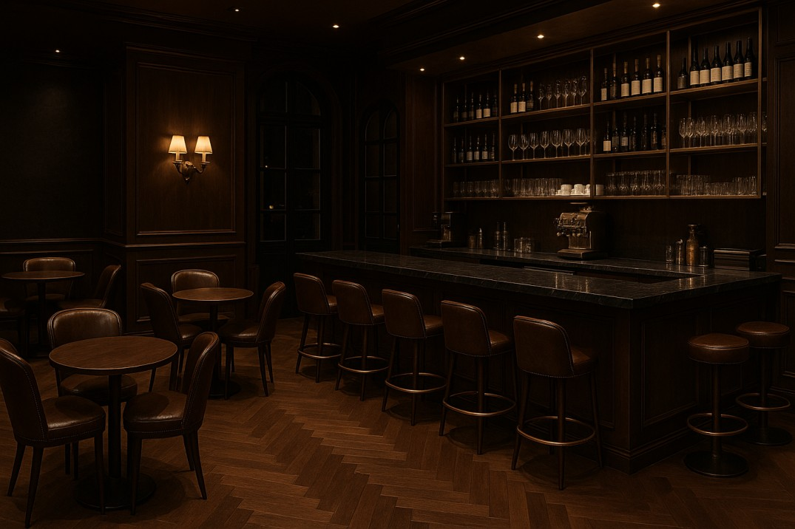

נולד מתוך תשוקה לרגעים יפים, כאלה שנשארים איתך הרבה אחרי שהכוס התרוקנה.
האתר שלנו נבנה כדי להזמין אתכם פנימה אל העולם שלנו. הריח של פולי הקפה הטריים, האור הרך והתחושה של רגע קטן שמוקדש רק לכם.
כל עמוד מספר חלק אחר מהסיפור.
מאהבה לקפה, דרך עיצוב מינימליסטי ואלגנטי ועד ההקפדה על חוויית משתמש נגישה ומדויקת.
אנחנו מזמינות אתכם לגלות, לטעום וליהנות מהרגעים הקטנים שמרכיבים חוויה גדולה.
מאחורי האתר עומד תהליך מדויק ורגיש, שנועד להפוך תחושת חמימות וחיבור לחוויה דיגיטלית מלאה.
עבדנו מתוך שאיפה ליצור מקום שמדבר בגובה העיניים, נגיש, אסתטי ומעורר השראה.
האתגר היה לשמור על פשטות מבלי לוותר על עומק, לספר סיפור דרך פרטים קטנים.
האתר מיועד לכל מי שמחפש רגע של שלווה, אהבה לעיצוב ותחושת קהילה.

אודות הפרויקט
האתר פותח על ידי שיראל בידוש, גיל לחיאני ואלה צדקה
במסגרת פרויקט לקורס "פיתוח אתרי אינטרנט" בשנה א' תשפ"ה.
האתר אופיין ועוצב לפי עקרונות של "עיצוב ממשק" ופותח ב- HTML5 ו- CSS3.